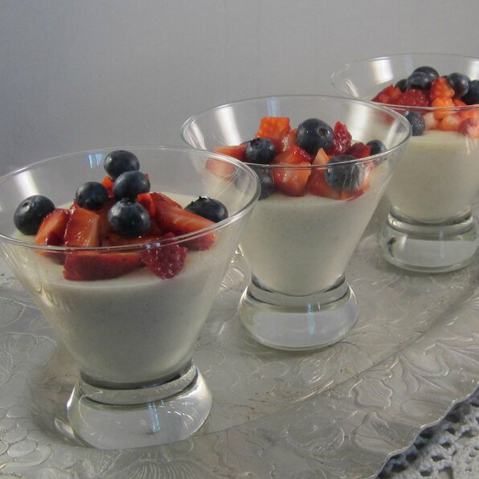

Vanilla Pudding

Description
This is an easy and very nice tasting desert. It goes well after a heavy meal or when you want something slightly sweet.
Ingredients
- ⅓ cup white sugar
- 3 tablespoons cornstarch
- ¼ teaspoon salt
- 2½ cups milk
- 1½ teaspoons vanilla extract
Steps
- In a saucepan, combine the sugar, corn starch and salt. Add milk and cook over medium heat, stirring constantly until mixture thickens. Add vanilla and continue to cook for 2 to 3 minutes.
- Pour into individual molds rinsed with cold water; chill until firm and unmold.